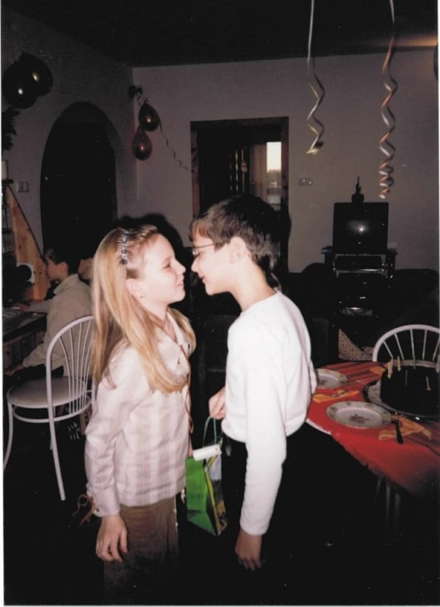
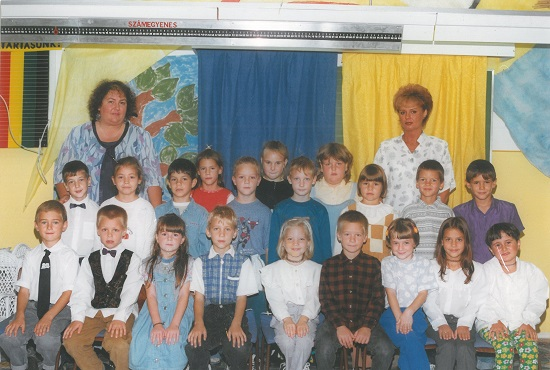
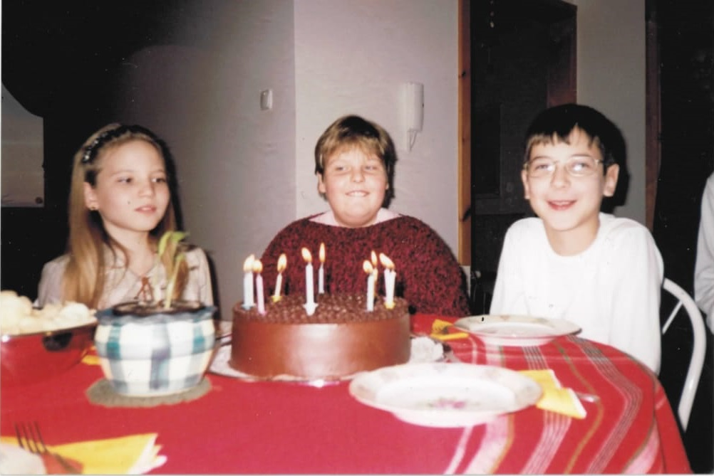

Mintha csak tegnap lett volna az a sok sütögetés mamával, a bölcsőde iránti gyűlöletem, az annál vidámabb Sün Balázs óvoda korszakom és az akrobatikus rock&roll iránti kedvtelésem. Gyermekként sokat jelentett számomra, hogy bevezettek a nyéki telkünkön való kertészkedés és gazdálkodás fortélyaiba, ahol belefért néha egy kis tűsarkúban való egyensúlyozás az egyenetlen földbuckákon. Bár mulatságosnak hangzik, de épp olyan szenvedéllyel táncoltam a tiszaújvárosi rocky csapatban, mint ahogy szerettem kapálni Nyéken. Persze kedvenc plüss állatbarátaimról sem szabad megfeledkezni, [Titi] és [Manyinya] hű társaim voltak, akiket babakocsiban mindenhová magammal vittem (toltam). Gyakorlatilag ez a 10 év alapozta meg gondolkodásmódomat, és adta azokat az értékeket, amiket a mai napig követek és képviselek.
Még élénken él bennem vidám gyermekkorom emléke. A faluban Mamával töltött nyári hetek, a TVK strand, a családi nyaralások. Az akkor szövődő barátságok melyek kiállták a hosszú idők próbáját.
Nehéz ebben a néhány sorban összefoglalni kiskoromat, hiszen pár emléken túl leginkább csak érzések kerítenek hatalmába, amikor erre az időszakra gondolok. Azonban annyit biztosan tudok, hogy szeretettel tartozom mindenkinek, aki gyermekkoromban azzá formált, aki most vagyok.
Első találkozásunk - 1998
Becsengettek. Szokatlan volt számunkra, hiszen először hallottuk az iskola csengőjét. Ekkor voltunk a Széchényi István Általános Iskola első osztályos tanulói, és úgy hozta a sors, hogy osztálytársak lettünk. A mai napig szeretünk nosztalgiázni kisiskolás önmagunkról és közös emlékeinkről, ezekből szerencsére sokat tudhatunk magunkénak. Számos alkalommal vettünk részt egymás szülinapi zsúrjain és többször is táncoltunk együtt a farsangi előadásokon. Így utólag ezek rendkívül megmosolyogtatnak minket és érdekes azt felfedezni, hogy vannak hasonlóan megélt pillanatok, de ellenkezőjére is volt már példa.



Randevúnk - 2012
Sok idő eltelt. Úgy hozta a sors, hogy újra találkoztunk immáron Budapesten. Szinte már régi jó ismerősként üdvözöltük egymást, bár 10 évvel idősebb önmagunk már teljesen másként látta a másikat, mint azelőtt. Ekkor mindketten felsőfokú tanulmányainkat folytattuk: a Corvinus és a Műszaki Egyetemre jártunk, csupán egy Duna választott el Bennünket. Szerencsére ezt könnyedén áthidaltuk, hiszen gyakran tanultunk együtt, korrepetáltuk egymást hol matematikából, hol pedig mikroökonómiából. Így a barátságból hamar szerelem lett.
Miután érzéseink és szándékaink komolyak voltak, így az összeköltözés elhatározására jutottunk. 20 évesek voltunk ekkor, ahol döntésünket nem a kényszer, hanem a lehetőség irányította.
Együttélés - 2013
Vizsga. Tanulás. Munkahely. Tanulás. Mosás. Pihenés. Főzés. Takarítás. Tanulás. Vizsga. Család. Kettőnk. Barátok. Szórakozás. Véleményünk szerint ez az időszak volt kapcsolatunk eddigi legnagyobb kihívása és próbatétele, hiszen egy eddig nem létező egyensúlyt, közös rendszert kellett kiépítenünk a kicsit sem egyszerű hétköznapjainkban. Ebben az időszakban rendkívül sokfajta érzést, indulatot, hangulatot éltünk meg együtt. Talán ha mindezek kimaradtak volna, nem tanultunk volna meg kitartónak lenni, összetartani és csapatban együttműködni… Ekkor bizonyosodtunk meg róla, hogy társai, legjobb barátai, kitartó hallgatósága vagyunk egymásnak.